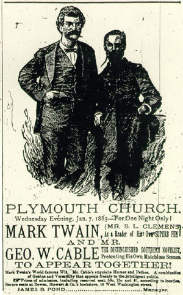
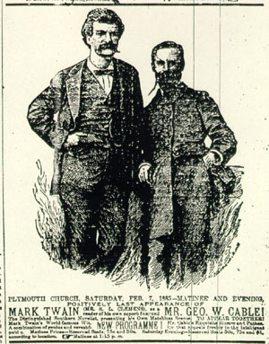

)
|   |
MT's faith in the power of publicity can be seen in the way that Tom Sawyer even advertises his decision to run away from home, spending his last day in St. Petersburg "enjoy[ing] the sweet glory of spreading the fact that pretty soon the town would 'hear something.'" As soon as Cable agreed to accompany him on the tour, MT put Pond to work spreading the news. By the end of July, 1884, Pond had prepared and MT had approved a press release: In September MT and Cable met in New York to pose for publicity photographs, and the image at left was chosen for the large newspaper ads that were run a day or two before each performance. The copy that accompanied the picture changed slightly, but invariably identified Cable as "a distinguished Southern novelist" and MT as a humorist, a "reader of his own fun." Both ads here appeared in the Indianapolis Journal. Despite what the first ad says, about "One Night Only," they performed in Indianapolis on 7 January and again on 7 February 1885; the copy under the second ad says "NEW PROGRAMME," which was only partly true. After seeing too many empty seats at the stops in Brockton and Boston, MT wrote Pond on 15 November 1884 that "louder advertising is absolutely necessary. We must have, in every town & city, one of two or half a dozen vast red posters with the single line, MARK TWAIN--CABLE . . ." I haven't found any examples of that poster, but Pond did prepare one that quoted at length from favorable reviews of four December performances: In the same letter, MT told Pond "we must have men to patrol the streets with bill-boards on their backs. We must resort to any methods -- & if we then still have such houses as we had to-day & last night, it will mean that we can't draw & better quit. Hurry up, old man!" Again, I haven't found any evidence that Pond put that suggestion into practice, but he did clearly employ an advance agent to plant notices about how pretty soon our town will hear something good in local papers along the route of the tour. In the examples of these publicity campaigns listed here, you can see for yourself how "hype" was handled in the late 19th century, and what kind of expectations were aroused about the evening's entertainment. December 30 January 5 & 6 January 3 - 8 January 17 January 20 January 21 & January 27 |